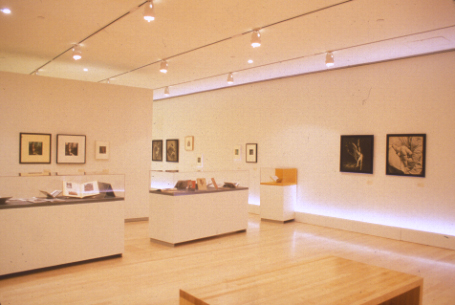

|  |
|
Fig 4: In this photograph of Section 2, the house
lights are on, so the full effect of the lighting design is absent. But
one can see how the short vitrines containing the National Socialist ephemera
were placed in relation to Bellmer's photographs on the walls, perpendicular
to and in front of them.
|